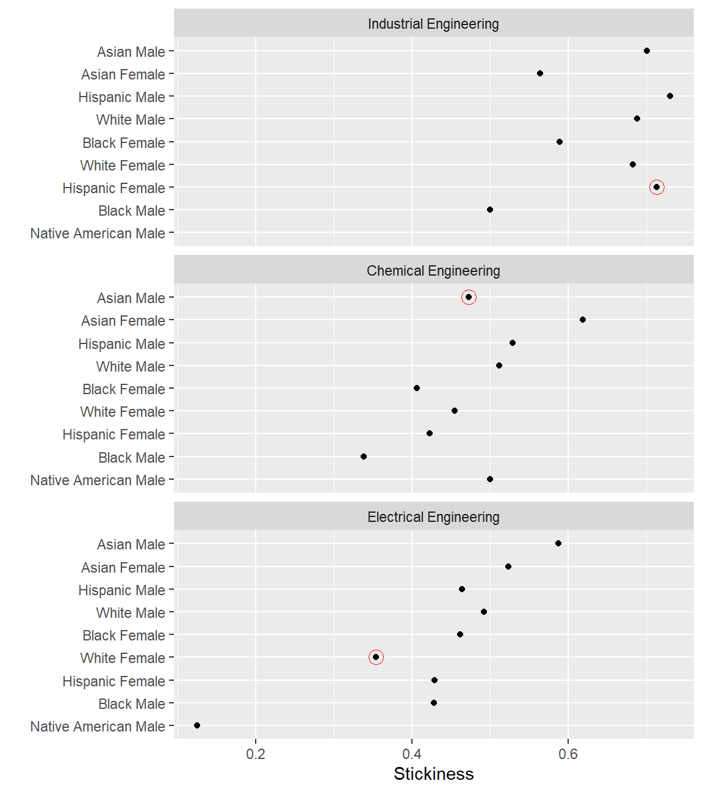

This exercise illustrates a typical workflow for computing a persistence metric, starting with student record data from MIDFIELD (Ohland and Long 2016) and ending with a multiway graph.
Our metric in this case is “stickiness”, the ratio of the number of students graduating from a program to the number ever enrolled in the program (Ohland et al. 2012). We compare the stickiness of three engineering programs with students grouped by program, race/ethnicity, and sex.
In this introductory example, conveying what is more important than how. We focus on what the steps are and how they fit together. How the code works is explained in greater detail in the vignettes (link).
In this example, we compare the stickiness of three programs—Chemical Engineering, Electrical Engineering, and Industrial Engineering—grouping students by program, race/ethnicity, and sex.
# packages used library(midfieldr) library(midfielddata) library(data.table) library(ggplot2) # data.table printing options options(datatable.print.nrows = 20, datatable.print.topn = 5)
We start by searching the cip data set for the 6-digit codes of our programs. Our first search using get_cip() is for engineering generally. The search is refined by searching on specific program key words.
# first pass sub_cip <- get_cip(data = cip, keep_any = "engineering") # examine the result sub_cip #> cip2 cip2name cip4 #> 1: 14 Engineering 1401 #> 2: 14 Engineering 1401 #> 3: 14 Engineering 1402 #> 4: 14 Engineering 1403 #> 5: 14 Engineering 1404 #> --- #> 117: 15 Engineering Technology 1516 #> 118: 15 Engineering Technology 1599 #> 119: 29 Military Technologies 2903 #> 120: 29 Military Technologies 2903 #> 121: 51 Health Professions and Related Clinical Sciences 5123 #> cip4name cip6 #> 1: Engineering, General 140101 #> 2: Engineering, General 140102 #> 3: Aerospace, Aeronautical and Astronautical Engineering 140201 #> 4: Agricultural, Biological Engineering and Bioengineering 140301 #> 5: Architectural Engineering 140401 #> --- #> 117: Nanotechnology 151601 #> 118: Engineering-Related Technologies, Technicians, Other 159999 #> 119: Military Applied Sciences 290301 #> 120: Military Applied Sciences 290303 #> 121: Rehabilitation and Therapeutic Professions 512312 #> cip6name #> 1: Engineering, General #> 2: Pre-Engineering #> 3: Aerospace, Aeronautical and Astronautical, Space Engineering #> 4: Agricultural, Biological Engineering and Bioengineering #> 5: Architectural Engineering #> --- #> 117: Nanotechnology #> 118: Engineering Related Technologies, Technicians, Other #> 119: Combat Systems Engineering #> 120: Engineering Acoustics #> 121: Assistive, Augmentative Technology and Rehabiliation Engineering
We refine the result by operating on the sub_cip data frame we just created.
# second pass sub_cip2 <- get_cip( data = sub_cip, keep_any = c("chemical", "electrical", "industrial"), drop_any = "technolog" ) # examine the result at the 4-digit level columns_we_want <- c("cip4", "cip4name") unique(sub_cip2[, ..columns_we_want]) #> cip4 cip4name #> 1: 1407 Chemical Engineering #> 2: 1410 Electrical, Electronics and Communications Engineering #> 3: 1435 Industrial Engineering #> 4: 1443 Biochemical Engineering
The results show that the 4-digit codes we want are 1407, 1410, and 1435. We use get_cip() again to extract the 6-digit codes for these specific programs. With label_programs() we extract the 6-digit columns only and add a program label.
# get chemical engineering che_cip <- get_cip(data = sub_cip2, keep_any = "^1407") che <- label_programs(data = che_cip, label = "Chemical Engineering") # view the result che #> cip6 cip6name program #> 1: 140701 Chemical Engineering Chemical Engineering #> 2: 140702 Chemical and Biomolecular Engineering Chemical Engineering #> 3: 140799 Chemical Engineering, Other Chemical Engineering
Repeat for electrical and industrial engineering.
# get electrical engineering ece_cip <- get_cip(data = sub_cip2, keep_any = "^1410") ece <- label_programs(data = ece_cip, label = "Electrical Engineering") # get industrial engineering ise_cip <- get_cip(data = sub_cip2, keep_any = "^1435") ise <- label_programs(data = ise_cip, label = "Industrial Engineering")
We combine the three programs into one data frame.
# gather the programs in the study program_group <- rbind(che, ece, ise) # examine the result program_group #> cip6 cip6name #> 1: 140701 Chemical Engineering #> 2: 140702 Chemical and Biomolecular Engineering #> 3: 140799 Chemical Engineering, Other #> 4: 141001 Electrical, Electronics and Communications Engineering #> 5: 141003 Laser and Optical Engineering #> 6: 141004 Telecommunications Engineering #> 7: 141099 Electrical, Electronics and Communications Engineering, Other #> 8: 143501 Industrial Engineering #> program #> 1: Chemical Engineering #> 2: Chemical Engineering #> 3: Chemical Engineering #> 4: Electrical Engineering #> 5: Electrical Engineering #> 6: Electrical Engineering #> 7: Electrical Engineering #> 8: Industrial Engineering
We can see that our custom program names are consistent with the default 6-digit CIP names, so we can dispense with the cip6names column. The program column is used later for grouping, summarizing, and joining.
# verbose column can be deleted program_group$cip6name <- NULL # examine the result program_group #> cip6 program #> 1: 140701 Chemical Engineering #> 2: 140702 Chemical Engineering #> 3: 140799 Chemical Engineering #> 4: 141001 Electrical Engineering #> 5: 141003 Electrical Engineering #> 6: 141004 Electrical Engineering #> 7: 141099 Electrical Engineering #> 8: 143501 Industrial Engineering
We extract the cip6 column as a character vector to gather student data.
# extract a vector of 6-digit CIP codes group_codes <- program_group$cip6 # examine the result group_codes #> [1] "140701" "140702" "140799" "141001" "141003" "141004" "141099" "143501"
A number of midfieldr functions have the form get_*(), for example,
In each function the first argument (data) has a default setting to access one of the data sets in midfieldr or midfielddata. For example, the default data argument is cip for get_cip(), midfieldstudents for get_race_sex(), and midfielddegrees for get_graduates().
One can omit the data argument if using the default datasets. Thus the following code chunks produce identical results.
library(midfieldr) group_codes <- c("141099", "143501") # using an implicit data argument get_enrollees(codes = group_codes) # using an explicit data argument library(midfielddata) get_enrollees(midfieldterms, codes = group_codes) # using an explicit, named data argument get_enrollees(data = midfieldterms, codes = group_codes)
Note that the midfielddata package must be loaded to assign one of its datasets by name. For clarity, we use the explicit form in the vignette.
We use get_enrollees() to extract the IDs of all students who ever enrolled in the programs listed in group_codes. The default data argument is midfieldterms.
# students ever enrolled in programs enrollees <- get_enrollees(midfieldterms, codes = group_codes) # examine the result enrollees #> id cip6 #> 1: MID25783178 140701 #> 2: MID25783178 143501 #> 3: MID25783197 140701 #> 4: MID25783257 140701 #> 5: MID25783491 141001 #> --- #> 6398: MID26697224 140701 #> 6399: MID26697229 140701 #> 6400: MID26697295 140701 #> 6401: MID26697447 140701 #> 6402: MID26697447 141001
For some of these students, completing their program may not be feasible given the range of data available. completion_feasible() subsets the student IDs, retaining those who matriculate at least six years before the last term in the data.
# apply the feasible completion filter feasible_ids <- completion_feasible(id = enrollees$id) # subset the enrollees rows_we_want <- enrollees$id %in% feasible_ids enrollees <- enrollees[rows_we_want] # examine the result enrollees #> id cip6 #> 1: MID25783178 140701 #> 2: MID25783178 143501 #> 3: MID25783197 140701 #> 4: MID25783491 141001 #> 5: MID25783606 141001 #> --- #> 5191: MID26697224 140701 #> 5192: MID26697229 140701 #> 5193: MID26697295 140701 #> 5194: MID26697447 140701 #> 5195: MID26697447 141001
We use get_race_sex() to obtain the race/ethnicity of each enrollee. The default data argument is midfieldstudents.
# obtain race/ethnicity and sex at matriculation demographics <- get_race_sex(midfieldstudents, keep_id = feasible_ids) # examine the result demographics #> id race sex #> 1: MID25783178 Black Male #> 2: MID25783197 White Male #> 3: MID25783491 White Male #> 4: MID25783606 White Male #> 5: MID25783912 White Male #> --- #> 5006: MID26697204 White Female #> 5007: MID26697224 White Male #> 5008: MID26697229 Unknown Male #> 5009: MID26697295 White Male #> 5010: MID26697447 Asian Male
Now we can join the race/ethnicity and sex data frame to the enrollees data frame.
# left-join demographics to enrollees enrollees <- merge(enrollees, demographics, by = "id", all.x = TRUE) # examine the result enrollees #> id cip6 race sex #> 1: MID25783178 140701 Black Male #> 2: MID25783178 143501 Black Male #> 3: MID25783197 140701 White Male #> 4: MID25783491 141001 White Male #> 5: MID25783606 141001 White Male #> --- #> 5191: MID26697224 140701 White Male #> 5192: MID26697229 140701 Unknown Male #> 5193: MID26697295 140701 White Male #> 5194: MID26697447 140701 Asian Male #> 5195: MID26697447 141001 Asian Male
We join the program names from program_group to our working data frame so we can count by groups in the next step.
# left-join program_group to enrollees enrollees <- merge(enrollees, program_group, by = "cip6", all.x = TRUE) # examine the result enrollees #> cip6 id race sex program #> 1: 140701 MID25783178 Black Male Chemical Engineering #> 2: 140701 MID25783197 White Male Chemical Engineering #> 3: 140701 MID25785896 White Male Chemical Engineering #> 4: 140701 MID25786299 White Female Chemical Engineering #> 5: 140701 MID25786745 White Male Chemical Engineering #> --- #> 5191: 143501 MID26693368 White Male Industrial Engineering #> 5192: 143501 MID26695188 White Male Industrial Engineering #> 5193: 143501 MID26695626 White Male Industrial Engineering #> 5194: 143501 MID26696116 White Female Industrial Engineering #> 5195: 143501 MID26696429 White Female Industrial Engineering
To frame our results in terms of program, race/ethnicity, and sex, we group by these variables and count the number of students in each grouping. The count is assigned to the new ever column.
# assign variables to aggregate by grouping_variables <- c("program", "race", "sex") # aggregation using data.table syntax grouped_enrollees <- enrollees[, .(ever = .N), by = grouping_variables] # examine the result grouped_enrollees #> program race sex ever #> 1: Chemical Engineering Black Male 77 #> 2: Chemical Engineering White Male 692 #> 3: Chemical Engineering White Female 374 #> 4: Chemical Engineering Other Male 12 #> 5: Chemical Engineering Black Female 128 #> --- #> 44: Industrial Engineering Native American Male 1 #> 45: Industrial Engineering Other Female 4 #> 46: Industrial Engineering Unknown Male 1 #> 47: Industrial Engineering Unknown Female 2 #> 48: Industrial Engineering Native American Female 1
Note the change in the size of the data frame, from 5195 in enrollees where every row is a student to 48 in the grouped_enrollees below where every row is a group.
A similar process is used to group and summarize our graduates. We start with get_graduates() with a default data argument of midfielddegrees. For graduates, the question of completion feasibility is moot—graduation itself establishes feasibility. Thus we omit the the feasible completion filter in this step.
# students graduating from programs graduates <- get_graduates(midfielddegrees, codes = group_codes) ids_we_want <- graduates$id demographics <- get_race_sex(midfieldstudents, keep_id = ids_we_want) graduates <- merge(graduates, demographics, by = "id", all.x = TRUE) graduates <- merge(graduates, program_group, by = "cip6", all.x = TRUE) grouped_graduates <- graduates[, .(grad = .N), by = grouping_variables] # examine the result grouped_graduates #> program race sex grad #> 1: Chemical Engineering White Male 354 #> 2: Chemical Engineering White Female 170 #> 3: Chemical Engineering Other Male 3 #> 4: Chemical Engineering Black Male 26 #> 5: Chemical Engineering Black Female 52 #> --- #> 41: Industrial Engineering Asian Female 22 #> 42: Industrial Engineering Other Male 4 #> 43: Industrial Engineering International Female 4 #> 44: Industrial Engineering Other Female 4 #> 45: Industrial Engineering Unknown Male 1
Note that we have 48 groupings of enrollees but only 45 groupings of graduates. Some enrollee groups have no graduates.
We join the two data frames by our framing variables (program, race/ethnicity, and sex), producing a data frame with ever and grad for each group.
# left-join graduates to enrollees metric <- merge(grouped_enrollees, grouped_graduates, by = grouping_variables, all.x = TRUE ) # examine the result, ordered by program metric[order(program)] #> program race sex ever grad #> 1: Chemical Engineering Asian Female 42 26 #> 2: Chemical Engineering Asian Male 74 35 #> 3: Chemical Engineering Black Female 128 52 #> 4: Chemical Engineering Black Male 77 26 #> 5: Chemical Engineering Hispanic Female 26 11 #> --- #> 44: Industrial Engineering Other Male 4 4 #> 45: Industrial Engineering Unknown Female 2 NA #> 46: Industrial Engineering Unknown Male 1 1 #> 47: Industrial Engineering White Female 252 172 #> 48: Industrial Engineering White Male 514 354
There are 3 NA entries in the grad column where we have enrollees but no graduates. To see them more directly:
rows_with_degree_NA <- is.na(metric$grad) metric[rows_with_degree_NA] #> program race sex ever grad #> 1: Industrial Engineering Native American Female 1 NA #> 2: Industrial Engineering Native American Male 1 NA #> 3: Industrial Engineering Unknown Female 2 NA
We convert the NA values in the grad column to zero.
# convert grad NA to zero metric[rows_with_degree_NA, grad := 0] # examine the result metric[rows_with_degree_NA] #> program race sex ever grad #> 1: Industrial Engineering Native American Female 1 0 #> 2: Industrial Engineering Native American Male 1 0 #> 3: Industrial Engineering Unknown Female 2 0
We omit rows with zero students ever enrolled, if any, to avoid dividing by zero, then divide grad by ever to compute stickiness.
# prevent division by zero rows_we_want <- metric$ever > 0 metric <- metric[rows_we_want] # compute stickiness metric[, stick := round(grad / ever, 3)] # examine the result metric #> program race sex ever grad stick #> 1: Chemical Engineering Asian Female 42 26 0.619 #> 2: Chemical Engineering Asian Male 74 35 0.473 #> 3: Chemical Engineering Black Female 128 52 0.406 #> 4: Chemical Engineering Black Male 77 26 0.338 #> 5: Chemical Engineering Hispanic Female 26 11 0.423 #> --- #> 44: Industrial Engineering Other Male 4 4 1.000 #> 45: Industrial Engineering Unknown Female 2 0 0.000 #> 46: Industrial Engineering Unknown Male 1 1 1.000 #> 47: Industrial Engineering White Female 252 172 0.683 #> 48: Industrial Engineering White Male 514 354 0.689
This completes the data manipulation for obtaining the persistence metric.
To prepare the results for graphing, we construct a “pre-multiway” version of the data frame. We begin by removing ambiguous levels of race/ethnicity.
# initialize the pre-multiway data frame pre_mw <- metric # remove ambiguous levels of race/ethnicity rows_we_want <- !pre_mw$race %in% c("Unknown", "International", "Other") pre_mw <- pre_mw[rows_we_want] # examine the result unique(pre_mw$race) #> [1] "Asian" "Black" "Hispanic" "Native American" #> [5] "White"
To protect confidentiality, we omit observations with 5 or fewer students ever enrolled.
# protect confidentiality of small populations rows_we_want <- pre_mw$ever > 5 pre_mw <- pre_mw[rows_we_want] # examine the result pre_mw #> program race sex ever grad stick #> 1: Chemical Engineering Asian Female 42 26 0.619 #> 2: Chemical Engineering Asian Male 74 35 0.473 #> 3: Chemical Engineering Black Female 128 52 0.406 #> 4: Chemical Engineering Black Male 77 26 0.338 #> 5: Chemical Engineering Hispanic Female 26 11 0.423 #> --- #> 22: Industrial Engineering Black Male 100 50 0.500 #> 23: Industrial Engineering Hispanic Female 7 5 0.714 #> 24: Industrial Engineering Hispanic Male 26 19 0.731 #> 25: Industrial Engineering White Female 252 172 0.683 #> 26: Industrial Engineering White Male 514 354 0.689
We plan to display these data in a multiway graph, characterized by a single quantitative response variable (stickiness) for each combination of levels of the two categorical variables (program and race/ethnicity/sex).
The race/ethnicity/sex category is created by uniting race and sex.
# complete the transformation to multiway form data_mw <- pre_mw # create a new combined framing variable data_mw[, race_sex := paste(race, sex, sep = " ")] # examine the result data_mw #> program race sex ever grad stick race_sex #> 1: Chemical Engineering Asian Female 42 26 0.619 Asian Female #> 2: Chemical Engineering Asian Male 74 35 0.473 Asian Male #> 3: Chemical Engineering Black Female 128 52 0.406 Black Female #> 4: Chemical Engineering Black Male 77 26 0.338 Black Male #> 5: Chemical Engineering Hispanic Female 26 11 0.423 Hispanic Female #> --- #> 22: Industrial Engineering Black Male 100 50 0.500 Black Male #> 23: Industrial Engineering Hispanic Female 7 5 0.714 Hispanic Female #> 24: Industrial Engineering Hispanic Male 26 19 0.731 Hispanic Male #> 25: Industrial Engineering White Female 252 172 0.683 White Female #> 26: Industrial Engineering White Male 514 354 0.689 White Male
To structure the data in multiway form, we select the three multiway variables and use order_multiway() to convert the categorical variables to factors and order the levels of the categories by the median stickiness.
# select the three multiway variables columns_we_want <- c("program", "race_sex", "stick") data_mw <- pre_mw[, ..columns_we_want] # initialize the multiway data frame data_mw <- order_multiway(data_mw)
The median stickiness values are attributes of the data frame. We can view them as follows. Note that program and race_sex are now factors ordered by the median stickiness (recorded under the scores attribute).
sapply(data_mw, FUN = attributes) #> $program #> $program$levels #> [1] "Electrical Engineering" "Chemical Engineering" "Industrial Engineering" #> #> $program$class #> [1] "factor" #> #> $program$scores #> Chemical Engineering Electrical Engineering Industrial Engineering #> 0.473 0.462 0.686 #> #> #> $race_sex #> $race_sex$levels #> [1] "Native American Male" "Black Male" "Hispanic Female" #> [4] "White Female" "Black Female" "White Male" #> [7] "Hispanic Male" "Asian Female" "Asian Male" #> #> $race_sex$class #> [1] "factor" #> #> $race_sex$scores #> Asian Female Asian Male Black Female #> 0.5640 0.5880 0.4620 #> Black Male Hispanic Female Hispanic Male #> 0.4280 0.4290 0.5290 #> Native American Male White Female White Male #> 0.3125 0.4550 0.5120 #> #> #> $stick #> NULL
The categorical variables are factors. The levels of program are ordered by increasing median stickiness from 0.46 (Electrical Engineering) to 0.69 (Industrial Engineering).
The levels of the race_sex are ordered by increasing median stickiness from 0.31 (Native American Male) to 0.59 (Asian Male).
We use conventional ggplot2 functions to graph stickiness in a multiway dot plot. Rows and panels, from top to bottom, are ordered by decreasing median stickiness (Cleveland 1993).
# graph results ggplot(data = data_mw, mapping = aes(x = stick, y = race_sex)) + facet_wrap(facets = vars(program), ncol = 1, as.table = FALSE) + geom_point(na.rm = TRUE) + labs(x = "Stickiness", y = "")

A multiway design reveals patterns and anomalies in the results. For example, among these programs for this sample population:
Visual anomalies, circled in red
Patterns, for these students and these programs
Such visual anomalies and patterns raise questions that lead to further research, for example, in institutional polices, the cultures of professional disciplines, and student experiences in the undergraduate ecosystem.
Cleveland, William S. 1993. Visualizing Data. Summit, NJ: Hobart Press.
Ohland, Matthew, Marisa Orr, Richard Layton, Susan Lord, and Russell Long. 2012. “Introducing stickiness as a versatile metric of engineering persistence.” In Proceedings of the Frontiers in Education Conference, 1–5.
Ohland, Matthew W., and Russell A. Long. 2016. “The Multiple-Institution Database for Investigating Engineering Longitudinal Development: An experiential case study of data sharing and reuse.” Advances in Engineering Education 5 (2): 398–404. http://advances.asee.org/wp-content/uploads/vol05/issue02/Papers/AEE-18-Ohland.pdf.
The vignette code chunks are collected below in a single, condensed script.
# packages used library(midfieldr) library(midfielddata) library(data.table) library(ggplot2) # gather the three programs che_cip <- get_cip(cip, keep_any = "^1407") che <- label_programs(che_cip, label = "Chemical Engineering") ece_cip <- get_cip(cip, keep_any = "^1410") ece <- label_programs(ece_cip, label = "Electrical Engineering") ise_cip <- get_cip(cip, keep_any = "^1435") ise <- label_programs(ise_cip, label = "Industrial Engineering") program_group <- rbind(che, ece, ise) program_group$cip6name <- NULL # extract a vector of 6-digit CIP codes group_codes <- program_group$cip6 # gather students ever enrolled with feasible program completion enrollees <- get_enrollees(midfieldterms, codes = group_codes) feasible_ids <- completion_feasible(id = enrollees$id) rows_we_want <- enrollees$id %in% feasible_ids enrollees <- enrollees[rows_we_want] demographics <- get_race_sex(midfieldstudents, keep_id = feasible_ids) enrollees <- merge(enrollees, demographics, by = "id", all.x = TRUE) enrollees <- merge(enrollees, program_group, by = "cip6", all.x = TRUE) # assign variables to aggregate by grouping_variables <- c("program", "race", "sex") grouped_enrollees <- enrollees[, .(ever = .N), by = grouping_variables] # gather graduates from programs graduates <- get_graduates(midfielddegrees, codes = group_codes) ids_we_want <- graduates$id demographics <- get_race_sex(midfieldstudents, keep_id = ids_we_want) graduates <- merge(graduates, demographics, by = "id", all.x = TRUE) graduates <- merge(graduates, program_group, by = "cip6", all.x = TRUE) grouped_graduates <- graduates[, .(grad = .N), by = grouping_variables] # compute the metric metric <- merge(grouped_enrollees, grouped_graduates, by = grouping_variables, all.x = TRUE ) rows_with_degree_NA <- is.na(metric$grad) metric[rows_with_degree_NA, grad := 0] rows_we_want <- metric$ever > 0 metric <- metric[rows_we_want] metric[, stick := round(grad / ever, 3)] # condition the data pre_mw <- metric rows_we_want <- !pre_mw$race %in% c("Unknown", "International", "Other") pre_mw <- pre_mw[rows_we_want] rows_we_want <- pre_mw$ever > 5 pre_mw <- pre_mw[rows_we_want] # complete the transformation to multiway form data_mw <- pre_mw data_mw[, race_sex := paste(race, sex, sep = " ")] data_mw <- pre_mw[, .(program, race_sex, stick)] data_mw <- order_multiway(data_mw) # graph results ggplot(data = data_mw, mapping = aes(x = stick, y = race_sex)) + facet_wrap(facets = vars(program), ncol = 1, as.table = FALSE) + geom_point(na.rm = TRUE) + labs(x = "Stickiness", y = "")